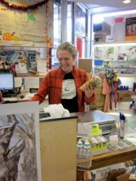
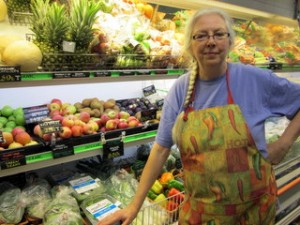

Our Story
Eats Natural Foods Cooperative, Inc. was purchased in March 1974 from its founder who was leaving town. The name was inspired by the Eats Diner which was at the top of the Catawba Mountain for many years. The business was incorporated in April 1974 with stated purpose of “providing the highest quality food at lowest possible price to our community", a philosophy that continues to this day.
Our first store was on College Ave. where Top of the Stairs is now and above Neily’s bookstore. It was reached by either an old wooden stairway or through the original Fringe Benefit. The store was about 12’x15’ and was run entirely by volunteer help. After several years, we moved to a building at 1201 N. Main St which was converted cinderblock building, about 20’x20’. When the market across the street became vacant, we rented it with much trepidation. It was 40’x40’ and had more space but a much higher rent too. We didn’t know what to do with all the room so we hung curtains to wall off some of the space and we filled the windows with so many plants that people thought we were a florist store. It didn’t take long to fill up the space and business continued to grow. We became experts at space utilization and put an amazing amount of merchandise in that store. We made most of our shelves out of wood, the store had a nice healthy feel and we were happy there for many years.
Then came the fire on June 27, 2006 and we were in shock. The morning after we didn’t know what to do but our wonderful customers started showing up with mops, gloves, buckets, and sponges and said “put us to work", so we starting cleaning what food and equipment we could salvage.
In one month we had opened inside Oasis World Market and were back in business, all only possible by the help of our wonderful loyal customers who we can’t thank enough.
After several years, Oasis wanted us out, so once again we needed to move quickly. The current building at 708 N. Main was vacant so we rented it and fixed it up to be the next Eats. We started moving on a Saturday morning and were open again Monday, again only made possible by our great customers. One crew picked up the food and broke down the shelves while a fleet of cars, trucks, and vans (thanks YMCA) carried everything to the new store and a third crew put the shelves together and stocked the shelves according to the detailed drawing we made. People were amazed at how quickly this move happened. There must have been over 100 volunteers helping which is why it was possible.
Currently, we continue to grow and provide our wonderful customers with the best food at the lowest possible price.
Come on by and check us out! You will be glad you did.